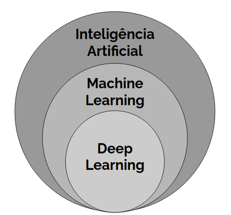
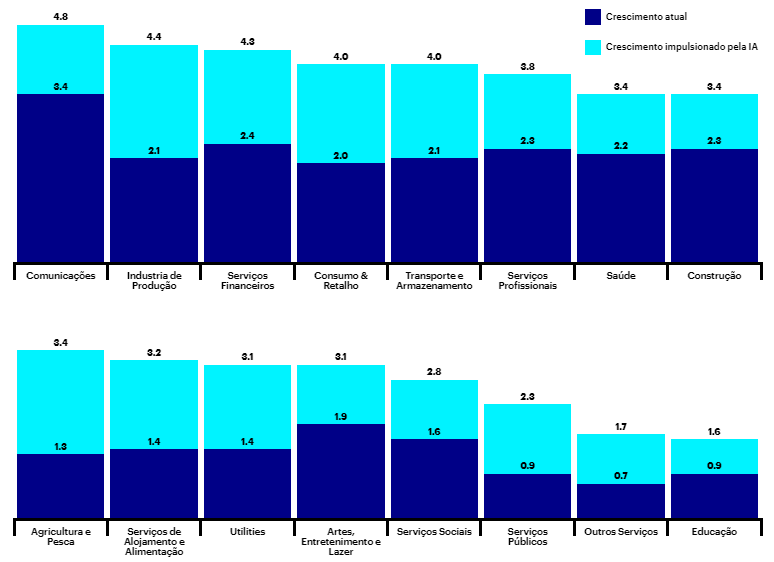
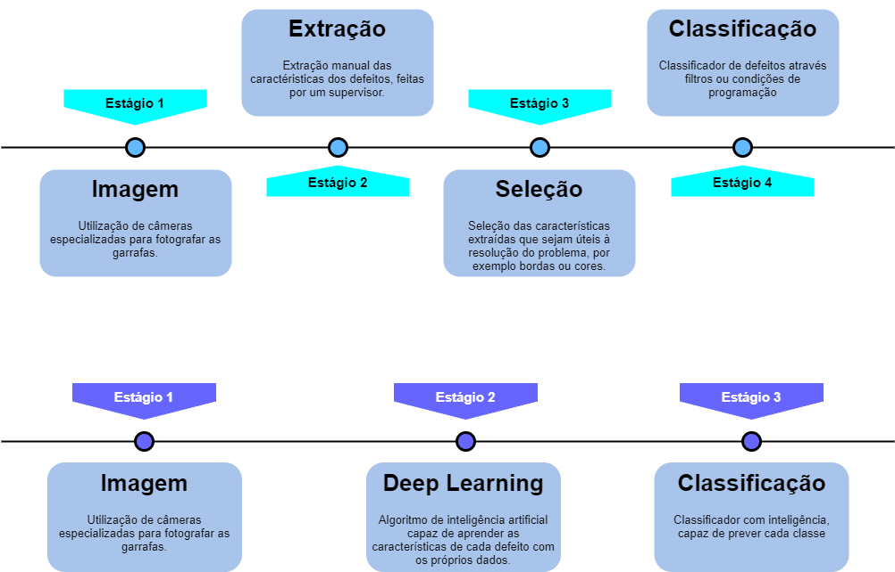
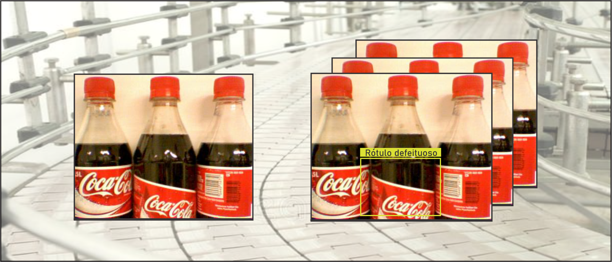

O impacto da Inteligência Artificial no Controle de Qualidade
Abordamos o impulsionamento da indústria com a integração da IA e uma demonstração de um serviço de inspeção de qualidade em garrafas de refrigerante,
A Inteligência Artificial vem revolucionando a indústria nos últimos anos e resolvendo problemas, que antes eram onerosos em tempo e dinheiro, de maneira muito mais eficaz. Problemas de visão computacional, processamento de linguagem natural e diversas outras aplicações só são possíveis graças aos diversos avanços na área.

A inteligência artificial e suas subáreas.
Inteligência artificial pode ser definida como qualquer método que permite computadores imitar a inteligência humana. Já a parte de Aprendizado de Máquina (Machine Learning) é a subárea de Inteligência Artificial que aprende com os dados utilizando métodos estatísticos sem ser diretamente programada para isso. Parte do Aprendizado de Máquina, o Aprendizado Profundo (Deep Learning) é a área em que programas aprendem sozinhos sobre características importantes sobre os dados, viabilizando tarefas como reconhecimento de padrões em voz ou imagens.
As Redes Neurais Artificiais (RNA) são um dos principais pilares dessa tecnologia. Inspiradas no cérebro humano, as RNA levam esse nome pois tem conexões e motivações biológicas. Assim como no cérebro humano, onde unidade mais básica de processamento é o neurônio, as RNA possuem um elemento que processa impulsos, ou entradas, e que também é chamado de neurônio ou nó.
Inteligência Artificial na Indústria como forma de reduzir custos
Podemos utilizar todo o espectro da Inteligência Artificial na indústria, desde Machine Learning até Aprendizado Profundo. Com ela, é possível otimizar processos com sistemas de automação inteligentes, aumentar o trabalho humano e impulsionar inovações. Sistemas de predição usando Machine Learning já são encontrados em áreas como manutenção preventiva, segurança de rede, processo de logística, gestão de inventário, gestão de ativos e gestão da cadeia de abastecimento. Por outro lado, recentemente com os avanços dos métodos de aprendizado profundo se tornaram mais comum em aplicações de visão computacional, principalmente no controle de qualidade. Essa tecnologia dá às máquinas sentidos mais humanos, como diferenciar e identificar objetos. Aqui estão alguns exemplos de aplicação de aprendizagem profunda na indústria que otimizam processos já existentes: identificação de produtos com defeito, detecção de anomalias e manutenção preditiva com redes neurais. Quando falamos diretamente de custos para o cliente, modelos são criados com o objetivo de realizar uma tarefa com precisão e também de otimizar um processo que permite a economia de dinheiro aos cofres da empresa. Segundo um estudo feito pela Accenture Research, o crescimento da margem de lucro na indústria americana vem diminuindo desde 2010. Isso acontece devido a fatores como como a falta de investimento em inovação e P&D. Por outro lado, a inovação é o que ajudará a indústria a voltar a lucrar. Com o aumento do número de sensores nas fábricas, a queda do preço de poder computacional e avanços em campos coma a Inteligências Artificial, a tecnologia será cada vez mais comum em processos industriais. De fato, na manufatura, a Inteligência Artificial encontra um ambiente favorável para inovar, já que essa área tem precursores como a Internet das Coisas (IoT).
Taxas de crescimento anuais em 2035 do valor bruto acrescentado (aproximadas ao PIB), comparando a linha base de crescimento em 2035 com um cenário de inteligência artificial, onde a IA foi absorvida pela economia. Fonte: Accenture e Frontier Economics
Normalmente atribuído a humanos, trabalhos repetitivos são os que geram um maior número de erros e muita vezes também são os com maiores riscos. Assim, a substituição da mão de obra humana por processos automatizados ajuda reduzir significativamente o número e erros e os riscos na produção, diminuindo assim os custos. A pesquisa da Accenture ainda mostra que a IA tem potencial para aumentar as taxas de lucratividade em uma média de 38% até 2035 e levar a um aumento econômico de US $ 14 trilhões em 16 setores em 12 economias até 2035. O impacto das tecnologias de IA nos negócios é projetado para aumentar a produtividade do trabalho em até 40 por cento - e permitir que as pessoas façam um uso mais eficiente de seu tempo.
Aplicação de Deep Learning em Sistemas de Controle de Qualidade:
O uso da tecnologia de visão por máquina mostra-se como um verdadeiro aliado no controle de inspeção de qualidade de produtos em linhas de produção. Durante décadas, existem implementações que possibilitam analisar diversos produtos através de câmeras com algoritmos de processamento de imagem, onde um funcionário escolhe quais características são importantes para o problema, como arestas, cantos, cores, etc. A partir disso, definem-se regras através da extração manual de características que definem se há ou não problema no produto visualizado, tornando-se um método simples e consideravelmente eficaz.
Com a revolução da Indústria 4.0, o desenvolvimento de sistemas autônomos e automatizados vem ganhando espaço. Dessa forma, foram desenvolvidos algoritmos de Deep Learning, que é uma ferramenta poderosa que possibilita alavancar os sistemas de inspeção de qualidade. Esse método possui uma característica única: aprender a partir dos próprios dados. O processo utiliza das fotografias capturadas pelas câmeras, e cria regras próprias, customizadas e adaptadas para cada problema, sem necessidade da presença humana.

Comparação entre sistemas de visão de máquina existentes e a simplificação através do uso de Deep Learning.
Além disso, essa tecnologia possui a flexibilidade de utilizar modelos treinados em problemas similares como um ponto de início para resolver um novo problema. Dessa forma, é possível otimizar as métricas de precisão e também economizar tempo de treino, visto que é necessário entregar ao modelo menos imagens para o aprendizado. Outro aliado da visão computacional são os algoritmos de detecção de objetos, que também partem de modelos pré-treinados em competições, e são necessários para localizar precisamente defeitos em objetos. Um exemplo de aplicação disso é o controle de qualidade em garrafas de plástico que implementamos na Fox IoT, em que o modelo consegue encontrar precisamente a localização de um rótulo defeituoso e consequentemente classifica-o corretamente.

Garrafa com rótulo defeituoso e inferência do algoritmo de inspeção visual.
Além do rótulo defeituoso, nossa inspeção de qualidade também é capaz de identificar quando a garrafa está amassada, sem tampa, sem rótulo ou com preenchimento de líquido incorreto, tornando uma solução completa para a indústria manufatureira. Devido à flexibilidade do serviço, podemos também fazer a contagem de produtos na linha de produção e abrangir para outras manufaturas, desde integridade de caixas até falhas em confecções de tecidos.
Assim explicado de forma geral o impulsionamento da indústria com a integração da inteligência artificial e uma demonstração de um serviço de inspeção de qualidade em garrafas de refrigerante, percebe-se que esses processos otimizados geram cada vez mais valor ao cliente final, possibilitando a redução de tempo e custos na produção.
Would you like to receive the most important news and trends in AI in just one email every end of the month? Subscribe below and I’ll send you the 10 most important news in Artificial Intelligence
Subscribe to Edge AI Guru
Get the latest posts delivered right to your inbox